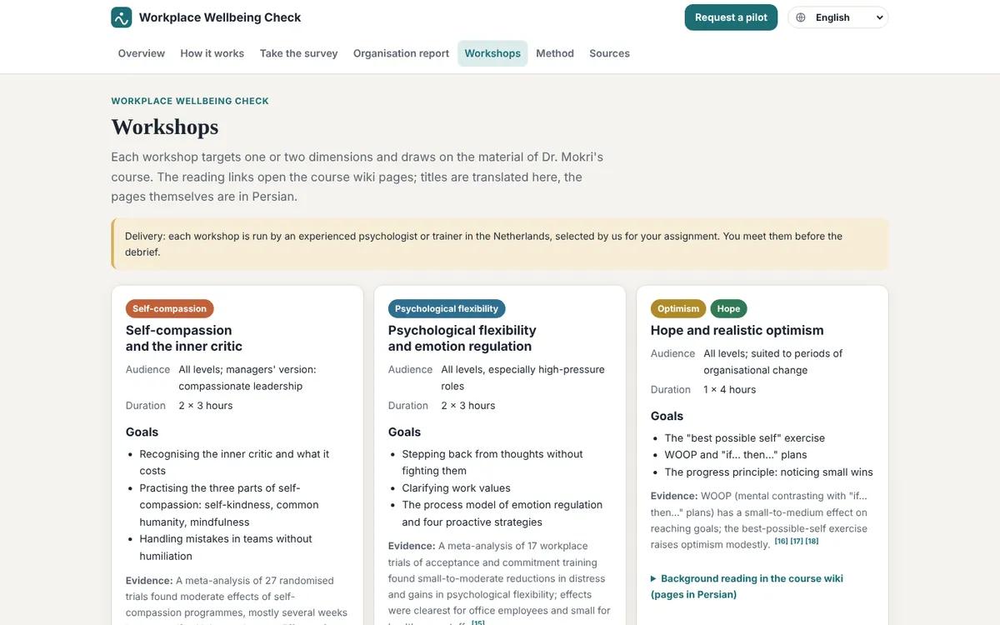

Live as Workplace Wellbeing Check
A weather report for a team's inner climate
How I designed Teamweather, an anonymous wellbeing assessment for Dutch organisations: validated science for employees, a clear report for HR, and a plan for whoever holds the budget.

The problem
Psychological health shows up on the balance sheet. In the Netherlands it is measurable, and large:
Yet when an organisation tries to measure it, three things go wrong:
- The questions are home-made, so the numbers can't be compared or trusted.
- Employees fear being identified, so they answer politely instead of honestly.
- A score doesn't say what to do next, so the report ends up in a drawer.
How might we give an organisation an honest picture of its people's psychological health, without exposing anyone, and turn it into action?
Research and insights
I studied the published questionnaires and the meta-analyses behind workplace interventions; Dutch and European rules (GDPR, Arbowet, the RI&E and the works council's right of consent); and who actually decides to buy a staff survey.
Three users, not one
The employee answers, HR reads, a manager pays. The employee needs safety and something in return; HR needs clarity; the budget holder needs a reason in euros.
Anonymity has to be structural
A privacy promise in the footer is not enough. If a team of three is visible in the report, people hold back. The rule has to live in the product.
In the Netherlands, rules sell
A survey like this usually goes past the works council (WOR art. 27). Arriving with the documents ready can save weeks.
Decisions
Every decision traded something away. These shaped the product most.


Then I wrapped it as a service a manager can say yes to: a four-week pilot (set up, collect, report, debrief), ready-made documents for the works council, staff and data processing, and an absence-cost calculator that shows what a small improvement is worth in euros.
Result so far
A complete, working pilot in English, Dutch and Persian: survey, personal summary, organisation report, workshop catalogue, method and sources, and the pilot documents. It is offered through SoloNovate, my company in Rotterdam.
It has no real users yet. Psychologists, HR managers and managers of large organisations have seen it, and I am looking for the first pilot organisations.
What I'll measure in the first pilot
- Participation per job level: is the anonymity trusted?
- Time from report to first workshop booked: does the report lead to action?
- Change per dimension at the repeat measurement after 3 to 6 months.
What I'd do differently
Talk to buyers earlier. I built the full report and nine languages before asking five HR managers how they buy. A one-page concept and a sample report would have tested the riskiest assumption, willingness to pay, in a week.
Start narrower. Eight dimensions is thorough, but a first pilot with three would be quicker to explain and run.
Check licences first. Some validated questionnaires have usage terms; listing them up front would have saved rework.